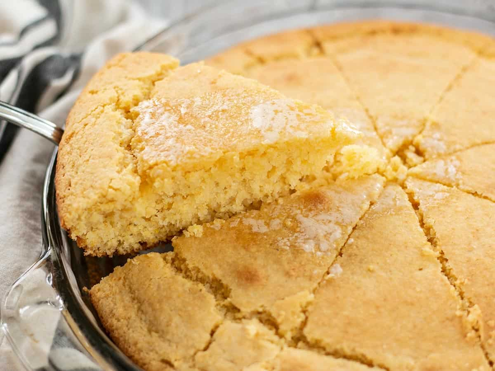

Cornbread

Description
Toss that boxed mix and make this fast and Easy Homemade Cornbread, which makes a great side
dish for breakfast, lunch, or dinner!
Ingredients
- Yellow Cornmeal
- All-purpose Flour
- Sugar
- Baking Powder
- Salt
- Milk
- Egg
- Oil
Steps
- Preheat the oven to 425ºF and coat the inside of a 9-inch pie plate, cast iron skillet, or 8x8
casserole dish with non-stick spray (or butter for more flavor).
- In a large bowl, stir together the cornmeal, flour, sugar, baking powder,
and salt until evenly combined.
- In a separate bowl, whisk together the milk, egg, and oil.
- Pour the bowl of wet ingredients into the bowl of dry ingredients and stir just until everything is
moist. Avoid over stirring. It's okay if there are a few lumps.
- Pour the batter into the prepared dish and bake for about 20 minutes, or until the top and
edges are golden brown. Cut into 8 pieces and serve.